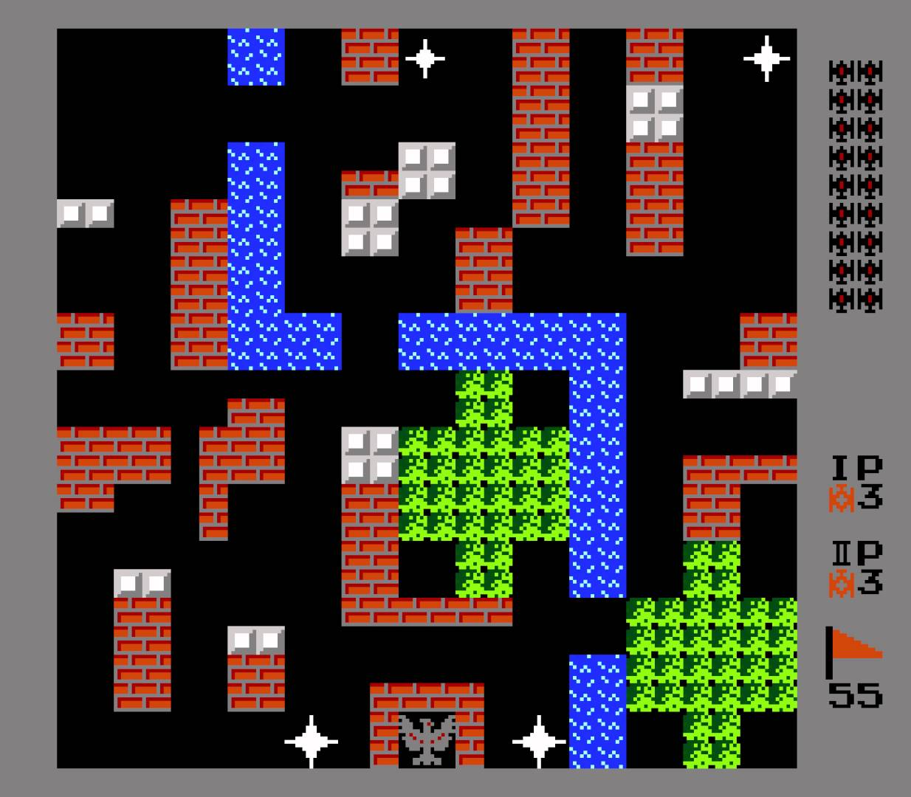
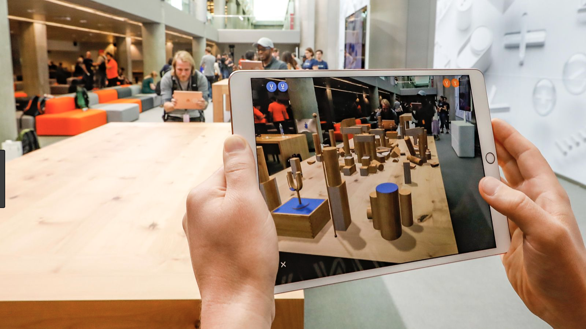

Battle Royale AR is an Augmented Reality gaming application. So, this is pretty much clear from the title, let us dive into the exact specifics of the application. The game is inspired from the legacy game - ‘Battle City’ which was developed by Namco with the first release in 1985. ‘Battle City’game incorporates a headquarter which is supposed to be guarded by a player or a group of players from the enemy tanks which are AI tanks. These tanks are spawned randomly and shoot the opposite tanks when they come across one of those. The result of shooting depends upon the level of the tank which takes the Hit.

Battle Royale AR is built on the same lines except that there is no group of players playing together. Instead, they play against each other using local multi-peer networking established by one of the hosts in the group. Each player gets 3 lives to play and unlike ‘Battle City’ there are no headquarters to defend. The game will be even more clear in the section of this article which describes the differences of this game with respect to ‘Battle City’.
The key difference which must be highlighted in this section is that this game is supposed to be played outside on a flat surface where there can be a plenty of open space to move around the Virtual Arena. This is one of the reasons for incorporating AR in this game i.e this will force the user for some physical efforts, unlike a console based version which can just be played by sitting on the couch.Another distinguishing feature of the game is that the players can see everything in 3d which adds another layer of complexity and realism to the game-play. Another similarity which should be brought into the picture at this point is the power-up feature. Like ‘Battle City’ there will be similar power-ups for tanks. For example, a power-up which makes the tank immune to all bullets for a short period of time. Another example can be a power-up which increases the rank of the tank.
Closing Notes:
‘Battle Royale AR’ will make a virtual arena on a flat surface. The user will see this arena on the phone screen and will be able to move around the arena and play virtually. The end product will look somewhat similar to the demonstration of SwiftShot by Apple. Please refer to the image below:

Arshdeep Singh Takkar and Vinay Manchundiya. We share equal roles of design and development of the game